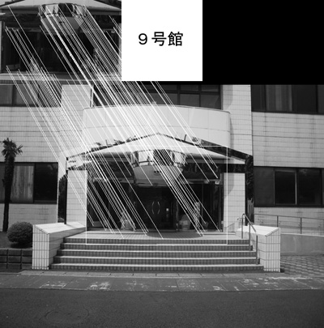

リサーチ
特定物体認識の応用研究について
多くの大学では、たとえばオープンキャンパスなどで、高校生やその保護者に大学を公開する機会が増えています。また、様々な大学紹介イベントも増えてきています。そのようなイベントでは、多くの場合、案内係を配したツアー形式で紹介する場合が多く見受けられますが、来場者がある程度自由に学内を見学できれば、来場者の満足感が増大することが期待できます。そこで、来場者が携帯端末を操作しながら学内を回り、その都度、必要な情報を取り出すようなアプリケーションがあれば便利であると考えられます。当研究室では、来場者が持つ携帯端末のカメラで建物を映し、その画像がキャンパス内のどの建物かを自動検出する方法について研究しています。研究では、SURFアルゴリズムを利用して、学内の建物の入口の識別を行っています。図はSURFアルゴリズムを利用して、本学９号館の入口を識別し、「９号館」であるとの情報を提示した様子です
